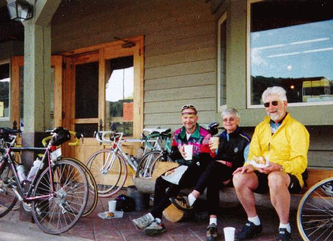
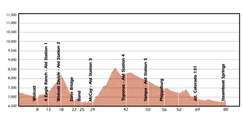

| Day 3: Long & Hard | ||
| Training Schedule Routes Pictures In Route Rockies
|
The third day started with a
chase. Due to a slightly staggered start, Wendy ended up ahead of
the others. As normally happens when some one gets ahead of the
others, she thought that we were ahead of her. It was clear almost
immediately, that we wouldn't be able to chase her down.
Fortunately, we did catch up with her taking a rest in Wolcott.
The stop in Wolcott included pastries and delicious
coffee (inline picture does not expand)  Statistically the third day should be relatively easy -- there are no mountain passes to climb and typical winds come out of the south which would be at our tail. Unfortunately for us, a weather front resulted in strong winds out of the north for the entire day. This required us to work on the latter stretch of gradual downhill. Most everyone I talked to agreed that this was the toughest day of the tour. Pat experienced stomach upset that evening and choose to take the next day off -- as did Barbara, David, Jack, and Wendy. I was totally wasted. Wendy said she found pedaling into the wind on the downhill very satisfying. -joe  |